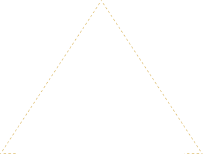
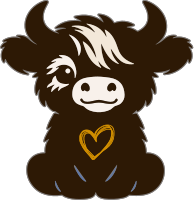

CalmCompanion™
CalmCompanion™The Science
Calm, explained.
Five well-studied ideas sit behind Norman: deep pressure, heart-rate entrainment, progressive muscle relaxation, paced breathing and touch. Here is how each one shows up in him.


Held closeWeight and a firm hold. His weight comes from glass beads, and a sensor on his upper back lets Responsive Hug follow how firmly you hold.Felt, not watchedFive small motors, three precise and two soft, play heartbeats, swells and breathing counts that you feel instead of watch.Settle togetherSoft fur and a steady presence that answers your hand. Like sitting beside someone calm, he gives your body something to settle alongside.Hover, tap or focus an icon to read more.
Five ideas, at a glance
What is behind the calm.
Mechanism 01 · Deep pressure
Deep pressure helps the body shift toward rest.
Weight and firm pressure, the kind you get from holding a weighted object close, are used by occupational therapists for sensory regulation. Pressure input is understood to help the nervous system move from alert toward rest and digest.
Norman’s weight is spread evenly through his body. A pressure sensor beneath the heart on his upper back lets Responsive Hug follow how firmly you hold, rather than relying on static weight alone.
“Deep-pressure tactile stimulation has modulating effects on the nervous system via decreasing sympathetic arousal and increasing parasympathetic activity.”
Frontiers in Pediatrics · Systematic review · 2025
Sources: Frontiers in Pediatrics systematic review (2025); American Journal of Occupational Therapy; Occupational Therapy in Mental Health.
Mechanism 02 · Heart-rate entrainment
A slower rhythm gives the body something steadier to follow.
Research on vibroacoustic therapy and wearable haptics suggests gentle vibration can ease stress responses. Tempo matters: vibration paced slower than a resting heartbeat is associated with lower reported anxiety, with no conscious effort needed.
Heartbeat mode starts with a real lub-dub and gradually slows over five minutes, so there is always a steadier rhythm to settle alongside.
Sources: Sandler et al.; PMC (2025); Azevedo et al., Scientific Reports (2017).
Mechanism 03 · Progressive muscle relaxation
Brief tension, then a longer release.
Progressive muscle relaxation has been used since the 1930s. Clinicians observe that a short period of tension followed by a clearly longer release tends to produce more relaxation than release alone.
Deep Calm follows that shape. A quick rise, a held beat, then a fall that lasts nearly twice as long as the build.
Sources: Jacobson, Progressive Relaxation (1938) and later clinical literature.
Mechanism 04 · Paced breathing
Slow, even breathing is a familiar way to settle.
Paced and box breathing are widely used in clinical and self-regulation practice. Counting each phase can be hard when you are already stressed, which is where an outside cue helps.
Box Breathing marks four equal counts (in, hold, out, hold) with gentle taps, so you can follow by touch instead of counting or watching a screen.
Mechanism 05 · Touch
Touch is one of our oldest calming signals.
Neuroscience research describes touch as a primary route to regulation. Even brief self-touch, and the kind of touch that signals care, is linked to lower stress markers.
Norman is soft and warm to hold, and his steady rhythm is designed to give the nervous system a calm, predictable signal to follow.
“Those who employed touch as an emotion regulation tool were more likely to benefit from affectionate touch…”
Frontiers in Psychology · Touch as emotion regulation · 2025
Sources: Frontiers in Psychology (2025); 2024 systematic review; Schneider et al., eLife (2023); Triscoli et al.
Two kinds of motor
Precise, and soft.
Three of them. Each can play any of 123 built-in effects. They are precise, tactile and strong, so Norman can place a heartbeat, a tap or a breathing cue exactly where you feel it.
Two of them. A soft, fuzzy buzz that fills the space around the precise motors and adds a feeling of presence, like a hum you sense more than notice.
How he compares
A blanket, a wearable, and Norman.
| Weighted blanket | Vibration wearable | Norman | |
|---|---|---|---|
| Weighted comfort | ✓ | — | ✓ |
| Haptic vibration | — | ✓ | ✓ |
| Multiple modes | — | ✓ | ✓ |
| Responds to your hug | — | — | ✓ |
| Several motors working together | — | — | ✓ |
| Two motor types layered | — | — | ✓ |
| No wireless emissions | ✓ | — | ✓ |
Studies cited describe the underlying mechanisms and were not conducted on Norman, which is in prototype and early testing. Norman is a wellness companion. He is not a medical device and is not intended to diagnose, treat or cure any condition.
Be the first to know
The hug that hugs back.
Join the waitlist and you'll hear from us first.
You're in. Norman is taking his time, and we'll be in touch as he takes shape.